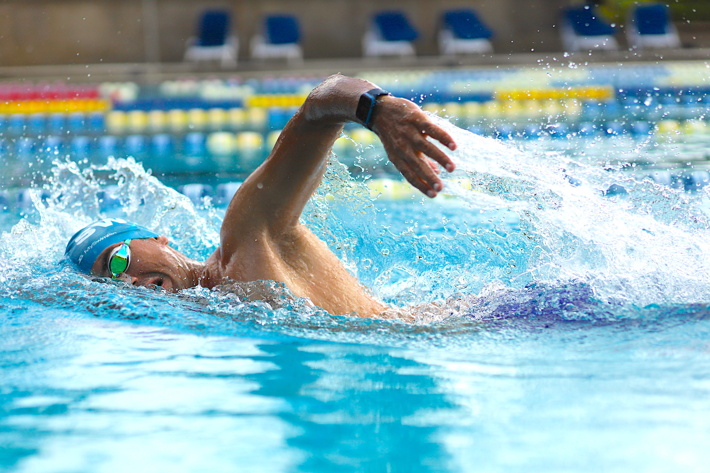
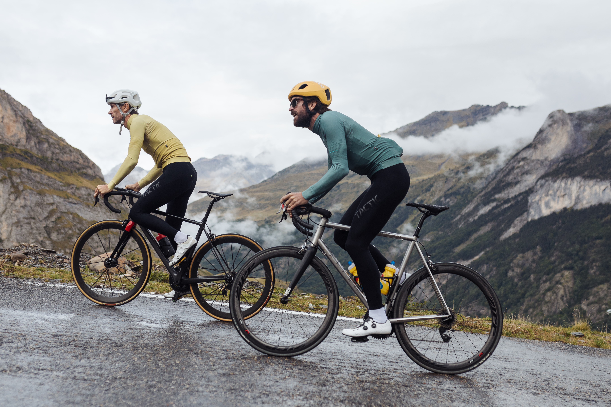
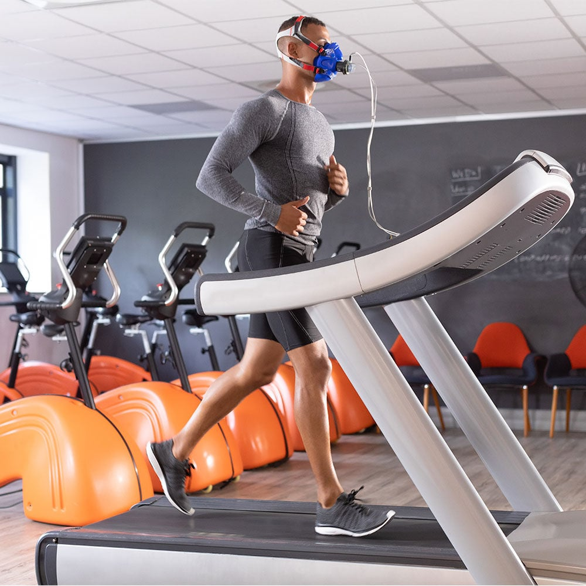
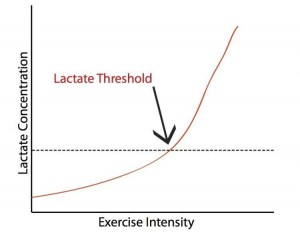
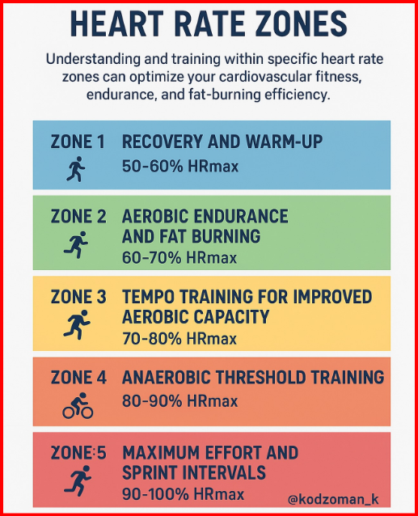

Athletic Performance Platform

100% Free. No Login. No Subscription. Made for humanity, awareness and fitness.
100% Free. No Login. No Subscription. Made for humanity, awareness and fitness.
Athlete-Chatbot is an open-access endurance science platform. Every blog, every guide and every performance concept is freely available. This project is designed to spread scientific awareness in running, cycling, swimming and multi-sport training.

Basic Information: Running is a form of aerobic exercise where both feet leave the ground during each stride. It strengthens the heart and improves overall cardiovascular health.
How to Start: Begin by mixing walking and jogging. The “Couch to 5K” method gradually builds endurance over several weeks. Increase distance slowly.
Events:
• 5K (3.1 miles) – Ideal beginner race.
• 10K (6.2 miles) – Next progression step.
• Half Marathon (13.1 miles) – Requires structured training.
• Marathon (26.2 miles) – Ultimate endurance milestone.
Necessary Accessories: Good running shoes are essential. Moisture-wicking clothes, water bottle, and GPS watch or tracking app are recommended.
Facts to Know: Slow conversational pace builds aerobic base and improves VO₂ Max. Consistency matters more than speed.

Basic Information: Swimming is a full-body, low-impact workout that builds strength and endurance while being gentle on joints.
How to Start: Learn proper stroke techniques (freestyle, breaststroke, backstroke). Start with short sessions and increase gradually.
Events:
• Swim Meets – Competitive pool races.
• Open Water Swims – Lakes, rivers, oceans.
• Triathlons – Multi-sport events including swim leg.
Necessary Accessories: Swimsuit, goggles, swim cap. Kickboards and pull buoys can assist training.
Facts to Know: Exhale underwater and inhale during rotation. Technique efficiency is more important than force.
Basic Information: Hiking is walking on trails in natural settings such as forests and mountains. It ranges from easy to challenging terrain.
How to Start: Choose short, flat trails first. Inform someone about your route and gradually increase difficulty.
Events:
• Group Hikes – Organized nature outings.
• Thru-Hiking – Completing long-distance trails.
• Peak Bagging – Reaching mountain summits.
Necessary Accessories: Sturdy hiking shoes, backpack, water, snacks, map/GPS, layered clothing.
Facts to Know: Follow “Leave No Trace” principles. Always check weather and trail conditions.

Basic Information: Cycling is a low-impact cardiovascular activity performed on roads, trails, or indoors.
How to Start: Use a properly fitted bike. Start with short rides in safe areas and gradually increase distance.
Events:
• Road Races – Competitive paved events.
• Mountain Bike Races – Off-road trail racing.
• Charity Rides – Non-competitive fundraising rides.
• Gran Fondos – Mass participation timed rides.
Necessary Accessories: Helmet (mandatory), water bottle, bike lights, lock, basic repair kit. Padded shorts improve comfort.
Facts to Know: Maintain tire pressure and clean chain regularly. Follow traffic laws when riding on roads.
To understand athletic performance at a rigorous level, we must analyze the physiological, metabolic, biomechanical and thermodynamic systems that govern human movement. Below is a science-first breakdown tailored for endurance and power-based sports.

Definition: VO₂ Max represents the maximum volume of oxygen the body can utilize during incremental intense exercise. It is the gold standard measure of cardiorespiratory fitness.
Fick Equation:
VO₂ = Q × (CaO₂ − CvO₂)
Where Q = Cardiac Output, and (CaO₂ − CvO₂) = Arteriovenous Oxygen Difference. This equation explains that oxygen usage depends on how much blood the heart pumps and how efficiently muscles extract oxygen.
Athletic Application: In running and cycling, a higher VO₂ Max increases aerobic capacity ceiling. In swimming, VO₂ is often limited by stroke mechanics and breathing control.
Elite Benchmarks: Men: 75–85 ml/kg/min | Women: 65–75 ml/kg/min

Lactate Threshold is the intensity where lactate accumulates faster than it can be cleared. It determines sustainable race pace.
Half Marathon and Marathon performance are more strongly predicted by LT₂ than by VO₂ Max alone. Elite athletes shift LT from ~70% to ~90% of VO₂ Max.

Training intensity is categorized by percentage of Maximum Heart Rate (MHR).
| Zone | Intensity | Physiological Adaptation |
|---|---|---|
| Zone 1 | 50–60% | Recovery & metabolic waste removal |
| Zone 2 | 60–70% | Mitochondrial density & fat oxidation |
| Zone 3 | 70–80% | Capillary growth & blood volume expansion |
| Zone 4 | 80–90% | Lactate clearance & glycogen efficiency |
| Zone 5 | 90–100% | Stroke volume & anaerobic capacity |
Swimming Note: Due to Mammalian Dive Reflex and cooling effect, swim heart rate is typically 10–15 bpm lower than running at equal effort.

Economy refers to oxygen cost at submaximal speeds. Two athletes with equal VO₂ Max can perform differently based on efficiency.
In swimming, hydrodynamic drag is often the limiting factor, not aerobic capacity.

At lower intensities, fat oxidation dominates. As intensity rises, glycogen becomes primary fuel.
Endurance training shifts the metabolic “crossover point,” allowing athletes to conserve glycogen for final race stages.
Cardiac Drift: During dehydration, stroke volume decreases and heart rate rises despite constant pace.
| Metric | Running / Marathon | Triathlon / Cycling | Competitive Swimming |
|---|---|---|---|
| Primary Predictor | Lactate Threshold (LT₂) | Power-to-Weight Ratio | Biomechanical Efficiency |
| Energy System | Aerobic Lipolysis | Mixed Glycolytic | Anaerobic Glycolytic |
| Limiting Factor | Glycogen Depletion | Thermal Stress | Hydrodynamic Drag |
| Key Variable | Vertical Oscillation | Cadence & Torque | Stroke Length/Frequency |
.jpg)
The Half Marathon is a gateway endurance event requiring a strong aerobic foundation while remaining more accessible than a full marathon.
.jpg)
The Marathon is a high-commitment endurance challenge demanding both physical resilience and mental strength.
.jpg)
A multi-sport endurance event requiring proficiency in swim, bike, and run with seamless transitions.

Focused on technical efficiency, controlled breathing, and explosive power.
| Event | Primary Focus | Key Metric | Major Risk / Requirement |
|---|---|---|---|
| Half Marathon | Speed + Endurance | 25–60 km Weekly Mileage | Lactate Threshold Training |
| Full Marathon | Total Endurance | 40–90 km Weekly Mileage | Overtraining & Fueling Strategy |
| Triathlon | Multi-sport Integration | 8+ Sessions per week | Brick & Transition Workouts |
| Swimming | Technique & Power | Stroke Efficiency | Shoulder Injury Prevention |


"Improved my VO2 max in 3 months using structured training."
- Rohan P."Best free endurance science resource online."
- Meera S."Helped me complete my first triathlon confidently."
- Daniel K."Structured training plans are scientifically accurate."
- Aisha R."Clear explanations of lactate threshold and VO2 Max."
- Vikram T."Feels like a real performance lab online."
- Neha K.Developed by Roshan. For humanity, awareness and fitness. 100% free access to all performance education.